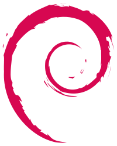
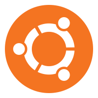
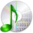
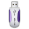

Debian GNU/Linux
Installation
2012-05-DD
Gnuside / @gnuside
À propos de Debian
Historique
- Logiciel Libre
- GNU
- OpenSource
- Linux
Distribution de logiciels
- Fedora (ex-Redhat)
-  Debian
- SuSe
-  Ubuntu
- Mageia (ex-Mandriva, ex-Mandrake)
- ...
Le système d'exploitation universel
- Une branche GNU/Linux, mais pas que...
- Plus de 29 000 paquets
- Basé sur un contrat social
- Sert de base à Knoppix, Ubuntu, Mint...
- plein de gens
- plein de matériels
- plein de tests
- plein de correctifs
Avant l'installation
FIXME: choix du matériel
Choix de la version
Selon la stabilité, le risque, ou la nouveauté souhaitée : stable, testing, unstable...
.. et pour la bonne architecture matérielle !
- i386 - compatible x86, 32 bits
- amd64 - compatible x86, 64 bits
- arm
- mips
- ...
Choix du support
- image cd (iso)
- image dvd (iso)
- image disque usb
 réseau (bootp + pxe)
réseau (bootp + pxe)
Choix du media
- Selon le support
- Installeur complet ou netinstall
(NFS, HTTP, FTP, Bittorent, etc.) - À télécharger sur le site officiel
IsoLinux
Choix du type d'installation
- install - classique en mode texte
- installation graphique - moderne, mais dépend du matériel
- advanced options - expert, automatisée, sauvetage ...
Sélection de la langue
* installation * zone geographique * clavier * FIXME: imageConfiguration du réseau
Définition des utilisateurs
Administrateur
Set root passwordUtilisateur principal
Set main user name and passwordPartitionnement du disque
choix du disque
Gestion des partitions
Gestion des points de montage
Formatage
FIXME: expliquer point de montageInstallation du systeme de base
Configuration de la gestion des paquets
Choix du miroir de l'archive ...
Un paquet ?
définition miroir ?
définition de l'archive ?
Choix du mandataire http